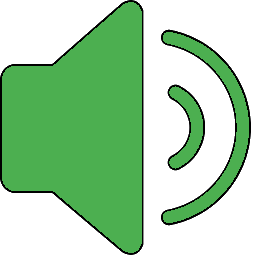

Description
Your best score: 0

?
Labyrinth Ball
This is a test of three.js and ammo.js, you can find the source code
here
.
To rotate the tray, use the arrow keys.
Use space key to push the ball.
Useful links
Source code of this app
ThreeJs
ammo.js source code and examples
Very good starting point
Very good ammo examples
Basic Collisions Detection, RayCasting with Three.Js
Not used, but interesting:
Constructive Solid Geometry With csg.js
Physijs (not maintained)
Simple 3D Physics Game Using Three.js and Physijs